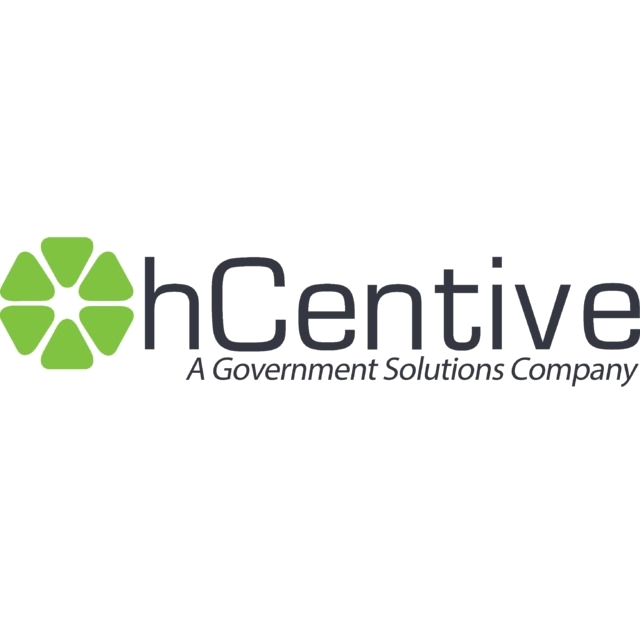
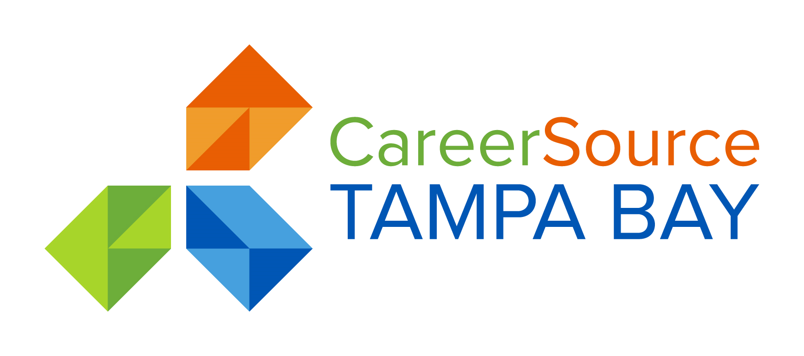
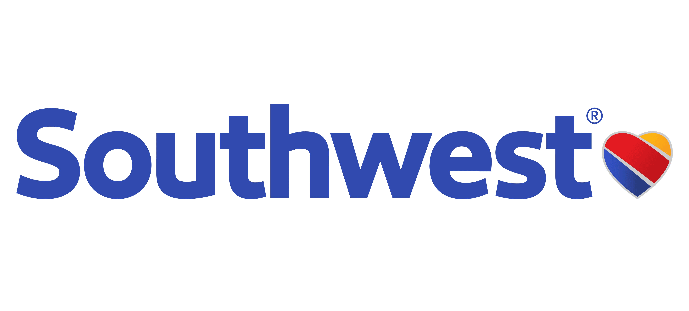
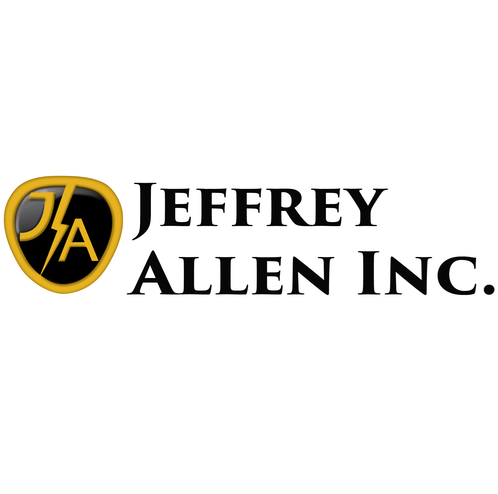
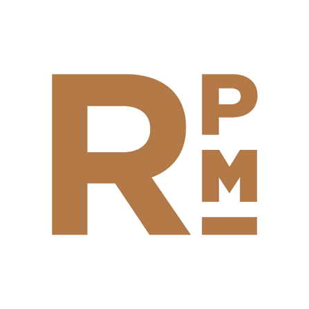

About
Hi, I'm Tonya —
I build and lead learning programs.
I'm an L&D and customer-education leader with 15+ years across healthcare, telecom, and SaaS. I've originated instructional-design functions from scratch, led the teams that run them, managed enterprise compliance programs, and owned customer and technical education for products serving tens of thousands of external users.
I work at both altitudes — setting program strategy and standing up the intake, governance, and measurement a function runs on, then rolling up my sleeves to write, build, and ship alongside the team. Every project ties back to a business KPI, and I report the impact to executive leadership.
How I work
Start with the business KPI
Every program is tied to a measurable outcome — handle time, time-to-competency, renewal rate, audit results — agreed with leadership before we build, through an intake-and-metrics framework.
Put myself in the learner's shoes
KPIs tell me where to aim; the learner tells me how. I map who I'm designing for — novice to expert, in the field or at a desk, all the time in the world or none — and let that reality drive format, pacing, and delivery.
Challenge what leaders think they need
Leaders often want a box checked — assigned and completed. I reframe the ask around outcomes that matter: real retention and behavior change on the job, not just a completion rate.
Build the function and lead the team
Durable results come from systems — intake, prioritization, project management, governance cadence, and standards a team can run long after launch. I've led ID teams and partnered with many departments including Product, Marketing, Sales, HR, and IT to secure investment and keep shifting priorities aligned to the roadmap.
My process
Start with what already exists
I set the expectation that discovery comes first. Before anything gets built, I start with what already exists — docs, manuals, existing courses, scripts — and go through it myself to understand the current state, so we're never designing blind.
Diagnose before designing
I lead the diagnosis with SMEs and leaders — goals, KPIs, timelines, expectations, and objectives, plus the learners themselves — backed by performance data and root cause. This is where I align leaders on whether it's really a training problem, or a communication, process, or culture problem. If training isn't the fix, I say so — even when it's not the answer they expected.
Design the solution
When it is a training need, I set the design standard the work is held to — adult-learning principles and designs that resonate with the learner — and build it in close collaboration with SMEs.
Implement in partnership
I don't hand over a finished course and walk away. I own the rollout as a partner — guiding delivery methods, communication strategy, and change management across an LMS, in-person sessions, or a blended approach — so the launch actually lands.
Measure and optimize
Results matter, and I own the measurement framework. We set success metrics at the start, then track the data that shows impact — from learner-engagement analytics to business-performance indicators. I report impact up and drive ongoing optimization based on real-world results.
L&D leadership
Strategy & ownership
Team & people
Operations
Stakeholders
Measurement & ROI
Domains
Tools & skills
Authoring
Content & craft
Delivery
Development
Methods & analysis
LMS
Design & media
AI
Continued learning
Experience
Manager, Compliance Training Program
Magellan Health | Healthcare SaaS · Own compliance & security training for 5,000 employees; 100% audit pass rate over 6 years.
Senior Lead Instructional Designer
Brightspeed | National telecom · Originated the ID function from scratch and lead a 5-person team; 100+ programs to 6,000+ employees.
Senior Instructional Designer
Verizon | Enterprise telecom · Product & sales-leadership training for 500+ leaders.
Senior Instructional Designer & Team Lead
hCentive | Healthcare insurance SaaS · Functional lead of a 10-person team; owned customer education for 10,000+ external users across 5 launches.
Senior Instructional Designer
National Democratic Institute | Global nonprofit · Built a 50+ course technical & security training program from scratch for a distributed workforce.
Recommendations
“What sets Tonya apart is her ability to operate at both the strategic and executional level. She didn't just build and manage training programs — she owned them end to end, from needs analysis and content development to delivery, quality assurance, and reporting.”
Carla Suesberry Jackson · VP, Deputy Chief Compliance Officer, Magellan Health
“At Brightspeed, she spearheaded our annual goal planning from inception to practical application, driving deadlines, processes, and innovations to improve internal and external metrics that benefitted the team, learners, and the company as a whole. Tonya is a skilled designer, innovative leader, and collaborative partner that any company would be lucky to have lead in their learning and development endeavors.”
Zach Farrar · Sr. Instructional Designer, Brightspeed
“Tonya is the kind of professional who raises the bar for everyone around her. She is self-directed, as well as deeply knowledgeable in instructional design and adult learning. … I recommend her without reservation for any senior learning and development leadership role.”
Kelli Peltier · Senior Technical Recruiter, Tampa Bay Workforce Alliance
Additional companies I've worked with:





Let's build something worth finishing.
© 2026 Tonya Weathers · L&D Leadership Portfolio